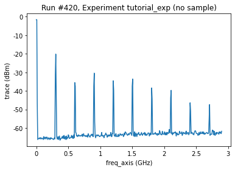
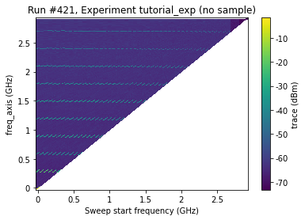
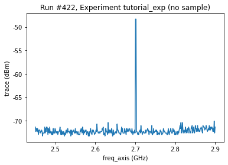
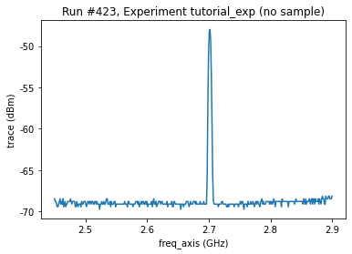
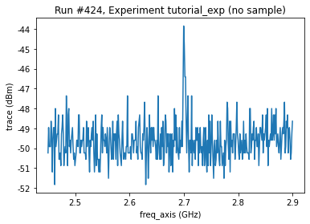
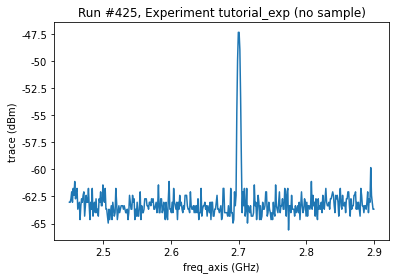
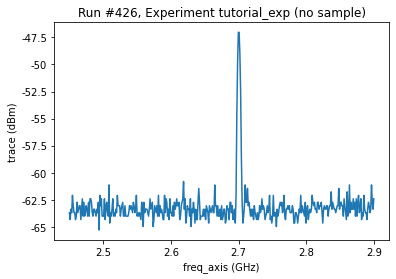
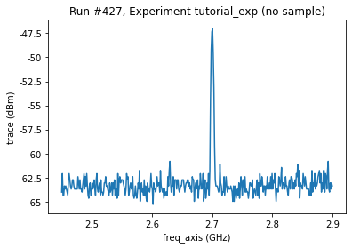

QCoDeS Example with HP8594E¶
In this notebook we will go through the driver for HP8594E
[1]:
from qcodes_contrib_drivers.drivers.HP.HP8594E import HP8594E
from qcodes.utils.dataset import doNd
import time
NoTagError: `git describe` could not find a tag
[2]:
hp = HP8594E('test', 'GPIB1::6::INSTR')
You can get the trace by getting the trace paramter. Getting the trace paramter sets the spectrum analyzer to single sweep mode and performe a sweep and transfers the data to the computer.
[3]:
doNd.do0d(hp.trace, do_plot=True)
Starting experimental run with id: 420. Using 'qcodes.dataset.do0d'
[3]:
(results #420@C:\Users\Farzad\experiments.db
-------------------------------------------
test_freq_axis - array
test_trace - array,
[<AxesSubplot:title={'center':'Run #420, Experiment tutorial_exp (no sample)'}, xlabel='freq_axis (GHz)', ylabel='trace (dBm)'>],
[None])

Start, Stop, Center and Span¶
We can set and get the start-, stop-, center-frequency and span. However, it is important to note that setting start or stop, also changes center and span, and setting center or span changes start and stop
[4]:
print(f"start frequency {hp.start_freq()}\n"
f"stop frequency {hp.stop_freq()}\n"
f"center frequency {hp.center_freq()}\n"
f"span {hp.span()}")
hp.start_freq(2450000000.0)
print(f"start frequency {hp.start_freq()}\n"
f"stop frequency {hp.stop_freq()}\n"
f"center frequency {hp.center_freq()}\n"
f"span {hp.span()}")
start frequency 0.0
stop frequency 2900000000.0
center frequency 1450000000.0
span 2900000000.0
start frequency 2450000000.0
stop frequency 2900000000.0
center frequency 2675000000.0
span 450000000.0
[5]:
doNd.do1d(hp.start_freq, 90000, 2900000000, 50, 0.01, hp.trace, do_plot=True)
Starting experimental run with id: 421. Using 'qcodes.dataset.do1d'
c:\Users\Farzad\miniconda3\envs\qcodesfork\lib\site-packages\qcodes\dataset\plotting.py:680: UserWarning: The input coordinates to pcolormesh are interpreted as cell centers, but are not monotonically increasing or decreasing. This may lead to incorrectly calculated cell edges, in which case, please supply explicit cell edges to pcolormesh.
colormesh = ax.pcolormesh(
[5]:
(results #421@C:\Users\Farzad\experiments.db
-------------------------------------------
test_start_freq - numeric
test_freq_axis - array
test_trace - array,
[<AxesSubplot:title={'center':'Run #421, Experiment tutorial_exp (no sample)'}, xlabel='Sweep start frequency (GHz)', ylabel='freq_axis (GHz)'>],
[<matplotlib.colorbar.Colorbar at 0x186e0c5e4f0>])

More settings¶
we can also set the sweep time, resolution and video bandwith, attenuation and reference level.
[6]:
print(f"sweep time {hp.sweep_time()}\n"
f"resolution bandwidth {hp.resolution_bandwidth()}\n"
f"video bandwidth {hp.video_bandwidth()}\n"
f"attenuation {hp.attenuation()}\n"
f"reference level {hp.reference_level()}"
)
sweep time 0.02
resolution bandwidth 300000.0
video bandwidth 100000.0
attenuation 10.0
reference level 0.0
[7]:
hp.start_freq(2450000000.0)
hp.resolution_bandwidth(3000000.0/10)
doNd.do0d(hp.trace, do_plot=True)
hp.resolution_bandwidth(3000000)
Starting experimental run with id: 422. Using 'qcodes.dataset.do0d'

[8]:
hp.video_bandwidth(1000000.0/100)
doNd.do0d(hp.trace, do_plot=True)
hp.video_bandwidth(1000000.0)
Starting experimental run with id: 423. Using 'qcodes.dataset.do0d'

[9]:
hp.attenuation(30)
doNd.do0d(hp.trace, do_plot=True)
hp.attenuation(10)
doNd.do0d(hp.trace, do_plot=True)
Starting experimental run with id: 424. Using 'qcodes.dataset.do0d'
Starting experimental run with id: 425. Using 'qcodes.dataset.do0d'
[9]:
(results #425@C:\Users\Farzad\experiments.db
-------------------------------------------
test_freq_axis - array
test_trace - array,
[<AxesSubplot:title={'center':'Run #425, Experiment tutorial_exp (no sample)'}, xlabel='freq_axis (GHz)', ylabel='trace (dBm)'>],
[None])


[10]:
hp.reference_level(30)
doNd.do0d(hp.trace, do_plot=True)
hp.reference_level(0)
doNd.do0d(hp.trace, do_plot=True)
Starting experimental run with id: 426. Using 'qcodes.dataset.do0d'
Starting experimental run with id: 427. Using 'qcodes.dataset.do0d'
[10]:
(results #427@C:\Users\Farzad\experiments.db
-------------------------------------------
test_freq_axis - array
test_trace - array,
[<AxesSubplot:title={'center':'Run #427, Experiment tutorial_exp (no sample)'}, xlabel='freq_axis (GHz)', ylabel='trace (dBm)'>],
[None])


Transfer type¶
Finally (if you need to kill som time) you can change the transfer type of the trace to ASCII
[11]:
nn = 10
hp.trace.transfer_type = 'ASCII'
start = time.perf_counter()
for i in range(nn):
hp.trace()
ASCII_time = (time.perf_counter()-start)/nn
hp.trace.transfer_type = 'bytes'
start = time.perf_counter()
for i in range(nn):
hp.trace()
bytes_time = (time.perf_counter()-start)/nn
print(f"ASCII_time {ASCII_time}\n"
f"bytes_time {bytes_time }")
ASCII_time 0.7235186299999995
bytes_time 0.17303064000000035
[12]:
hp.get_info()
[12]:
{'model': 'HP8594E',
'firmware_date': '950914\r',
'serial_number': '3199\r',
'uptime': '5 days, 2:36:56.073000'}
[13]:
hp.reset()